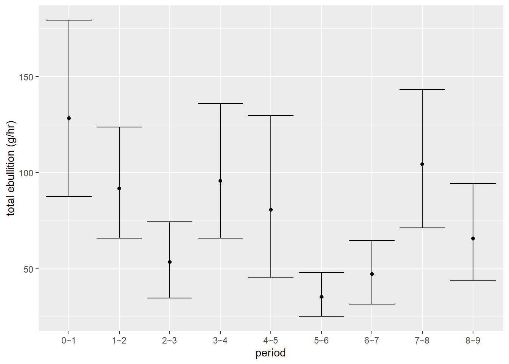

Chapter 9 Flux summary stats prep
Deans 8/16/22 Will need to rerun this
# deans1_conc <- read.csv("2-Clean Data/ebullition_concentrations.csv")%>%
# mutate(corr_ch4 = case_when(
# Sample.Vol == 0.1 ~ Undiluted.CH4.conc.ppm * 0.473176497,
# Sample.Vol == 0.2 ~ Undiluted.CH4.conc.ppm,
# Sample.Vol == 1 ~ Undiluted.CH4.conc.ppm)) %>%
# filter(is.na(Data.Flag)==T) %>%
# left_join(samplings, by = "Collection.Date") %>%
# filter(Sampling == "Deans1") %>%
# pull(corr_ch4)
#
# deans1_conc_vec <- sample(deans1_conc, 200, replace=T)
#
# deans_16_eb_kr <- deans_pts %>%
# full_join(ebullition_kriging %>%
# filter(Sampling == "Deans1") %>%
# mutate(ch4_rand = deans1_conc_vec,
# ch4_conc = if_else(is.na(corr_ch4), ch4_rand, corr_ch4)) %>%
# mutate(ch4_eb_g_m2_hr = gas_vol_corrected * (1/area) * (1/time_hr)* (1/10^6) * ch4_conc * (1/10^3) * 16.04 * (1/0.0821)* (1/293.15)), by = "location")
#
# deans_16_eb_results <- read.csv("5-Results/1-kriged-estimates/deans_16_eb_results.csv")
# deans_16_eb_results_summarized <- NULL
#
# for(i in 1:length(periods)){
# temp <- deans_16_eb_results %>% filter(period == periods[i]) %>% pull(sum_flux)
#
# temp_df <- data.frame(site = "Deans", date = "2022-08-16", period = i, flux_2.5 = as.numeric(quantile(temp, 0.025)), flux_97.5 = as.numeric(quantile(temp, 0.975)), mean_flux = mean(temp))
#
# deans_16_eb_results_summarized <- bind_rows(deans_16_eb_results_summarized, temp_df)
# }
#
# deans_16_eb_results_summarized <- deans_16_eb_results_summarized %>% mutate(period= periods[period])%>% left_join(ebullition_kriging %>% filter(Sampling == "Deans1") %>% group_by(period) %>% summarize(avg_time = mean(time_hr, na.rm = T)), by = "period")
#
# ggplot(deans_16_eb_results_summarized, aes(period, mean_flux))+
# geom_point()+
# geom_errorbar(aes(ymin = flux_2.5, ymax = flux_97.5))+
# ylab("total ebullition (g/hr)")
#
# # calculating by averaging instead of kriging
# deans_16_eb_kr %>%
# mutate(eb_avg = gas_vol_corrected * (1/area) * (1/time_hr)* (1/10^6) * mean(deans1_conc) * (1/10^3) * 16.04 * (1/0.0821)* (1/293.15)) %>%
# group_by(period) %>%
# summarize(average_eb = mean(eb_avg, na.rm=T)) %>%
# mutate(average_eb = average_eb * st_area(deans) %>% as.numeric()) %>%
# left_join(ebullition_kriging %>%
# filter(Sampling == "Deans1") %>%
# group_by(period) %>%
# summarize(avg_time = mean(time_hr, na.rm = T)), by = "period") %>%
# mutate(flux_g = average_eb * avg_time)%>%
# summarize(sum_flux = sum(flux_g)) %>%
# mutate(sum_flux_g_m2_day = sum_flux/st_area(deans))
#
# write.csv(deans_16_eb_results_summarized %>% filter(period!="8~9"), "5-Results/1-kriged-estimates/deans_16_eb_results_summarized.csv")Deans 8/30/22
# deans_30_eb_results <- read.csv("5-Results/1-kriged-estimates/deans_30_eb_results.csv")
# deans_30_eb_results_summarized <- NULL
#
# deans2_conc <- read.csv("2-Clean Data/ebullition_concentrations.csv")%>%
# mutate(corr_ch4 = case_when(
# Sample.Vol == 0.1 ~ Undiluted.CH4.conc.ppm * 0.473176497,
# Sample.Vol == 0.2 ~ Undiluted.CH4.conc.ppm,
# Sample.Vol == 1 ~ Undiluted.CH4.conc.ppm)) %>%
# filter(is.na(Data.Flag)==T) %>%
# left_join(samplings, by = "Collection.Date") %>%
# filter(Sampling == "Deans2") %>%
# pull(corr_ch4)
#
# deans2_conc_vec <- sample(deans2_conc, 225, replace=T)
#
# deans_30_eb_kr <- deans_pts %>%
# full_join(ebullition_kriging %>%
# filter(Sampling == "Deans2") %>%
# mutate(ch4_rand = deans2_conc_vec,
# ch4_conc = if_else(is.na(corr_ch4), ch4_rand, corr_ch4)))
#
# for(i in 1:length(periods)){
# temp <- deans_30_eb_results %>% filter(period == i) %>% pull(sum_flux)
#
# temp_df <- data.frame(site = "Deans", date = "2022-08-30", period = i, flux_2.5 = as.numeric(quantile(temp, 0.025)), flux_97.5 = as.numeric(quantile(temp, 0.975)), mean_flux = mean(temp))
#
# deans_30_eb_results_summarized <- bind_rows(deans_30_eb_results_summarized, temp_df)
# }
#
# deans_30_eb_results_summarized <- deans_30_eb_results_summarized %>% mutate(period= periods[period])%>% left_join(ebullition_kriging %>% filter(Sampling == "Deans2") %>% group_by(period) %>% summarize(avg_time = mean(time_hr, na.rm = T)), by = "period")
#
# ggplot(deans_30_eb_results_summarized, aes(period, mean_flux))+
# geom_point()+
# geom_errorbar(aes(ymin = flux_2.5, ymax = flux_97.5))+
# ylab("total ebullition (g/hr)")
#
# # calculating by averaging instead of kriging
# deans_30_eb_kr %>%
# mutate(eb_avg = gas_vol_corrected * (1/area) * (1/time_hr)* (1/10^6) * mean(deans2_conc) * (1/10^3) * 16.04 * (1/0.0821)* (1/293.15)) %>%
# group_by(period) %>%
# summarize(average_eb = mean(eb_avg, na.rm=T)) %>%
# mutate(average_eb = average_eb * st_area(deans) %>% as.numeric()) %>%
# left_join(ebullition_kriging %>%
# filter(Sampling == "Deans2") %>%
# group_by(period) %>%
# summarize(avg_time = mean(time_hr, na.rm = T)), by = "period") %>%
# mutate(flux_g = average_eb * avg_time)%>%
# summarize(sum_flux = sum(flux_g)) %>%
# mutate(sum_flux_g_m2_day = sum_flux/st_area(deans))
#
# write.csv(deans_30_eb_results_summarized, "5-Results/1-kriged-estimates/deans_30_eb_results_summarized.csv")Catfish 9/6/22
# catfish_06_eb_results <- read.csv("5-Results/1-kriged-estimates/catfish_06_eb_results.csv")
# catfish_06_eb_results_summarized <- NULL
# catfish1_conc <- read.csv("2-Clean Data/ebullition_concentrations.csv")%>%
# mutate(corr_ch4 = case_when(
# Sample.Vol == 0.1 ~ Undiluted.CH4.conc.ppm * 0.473176497,
# Sample.Vol == 0.2 ~ Undiluted.CH4.conc.ppm,
# Sample.Vol == 1 ~ Undiluted.CH4.conc.ppm)) %>%
# filter(is.na(Data.Flag)==T) %>%
# left_join(samplings, by = "Collection.Date") %>%
# filter(Sampling == "Catfish1") %>%
# pull(corr_ch4)
#
# catfish1_conc_vec <- sample(catfish1_conc, 225, replace=T)
#
# catfish_06_eb_kr <- catfish_pts %>%
# full_join(ebullition_kriging %>%
# filter(Sampling == "Catfish1") %>%
# mutate(ch4_rand = catfish1_conc_vec,
# ch4_conc = if_else(is.na(corr_ch4), ch4_rand, corr_ch4)))
#
#
# for(i in 1:length(periods)){
# temp <- catfish_06_eb_results %>% filter(period == i) %>% pull(sum_flux)
#
# temp_df <- data.frame(site = "Catfish", date = "2022-09-06", period = i, flux_2.5 = as.numeric(quantile(temp, 0.025)), flux_97.5 = as.numeric(quantile(temp, 0.975)), mean_flux = mean(temp))
#
# catfish_06_eb_results_summarized <- bind_rows(catfish_06_eb_results_summarized, temp_df)
# }
#
# catfish_06_eb_results_summarized <- catfish_06_eb_results_summarized %>% mutate(period= periods[period])%>% left_join(ebullition_kriging %>% filter(Sampling == "Catfish1") %>% group_by(period) %>% summarize(avg_time = mean(time_hr, na.rm = T)), by = "period")
#
# ggplot(catfish_06_eb_results_summarized, aes(period, mean_flux))+
# geom_point()+
# geom_errorbar(aes(ymin = flux_2.5, ymax = flux_97.5))+
# ylab("total ebullition (g/hr)")
#
# # calculating by averaging instead of kriging
# catfish_06_eb_kr %>%
# mutate(eb_avg = gas_vol_corrected * (1/area) * (1/time_hr)* (1/10^6) * mean(catfish1_conc) * (1/10^3) * 16.04 * (1/0.0821)* (1/293.15)) %>%
# group_by(period) %>%
# summarize(average_eb = mean(eb_avg, na.rm=T)) %>%
# mutate(average_eb = average_eb * st_area(catfish) %>% as.numeric()) %>%
# left_join(ebullition_kriging %>%
# filter(Sampling == "Catfish1") %>%
# group_by(period) %>%
# summarize(avg_time = mean(time_hr, na.rm = T)), by = "period") %>%
# mutate(flux_g = average_eb * avg_time)%>%
# summarize(sum_flux = sum(flux_g)) %>%
# mutate(sum_flux_g_m2_day = sum_flux/st_area(catfish))
#
# write.csv(catfish_06_eb_results_summarized, "5-Results/1-kriged-estimates/catfish_06_eb_results_summarized.csv")Catfish 9/18/22
# catfish2_conc <- read.csv("2-Clean Data/ebullition_concentrations.csv")%>%
# mutate(corr_ch4 = case_when(
# Sample.Vol == 0.1 ~ Undiluted.CH4.conc.ppm * 0.473176497,
# Sample.Vol == 0.2 ~ Undiluted.CH4.conc.ppm,
# Sample.Vol == 1 ~ Undiluted.CH4.conc.ppm)) %>%
# filter(is.na(Data.Flag)==T) %>%
# left_join(samplings, by = "Collection.Date") %>%
# filter(Sampling == "Catfish2") %>%
# pull(corr_ch4)
#
# catfish2_conc_vec <- sample(catfish2_conc, 225, replace=T)
#
# catfish_18_eb_kr <- catfish_pts %>%
# full_join(ebullition_kriging %>%
# filter(Sampling == "Catfish2") %>%
# mutate(ch4_rand = catfish2_conc_vec,
# ch4_conc = if_else(is.na(corr_ch4), ch4_rand, corr_ch4)) %>%
# mutate(ch4_eb_g_m2_hr = gas_vol_corrected * (1/area) * (1/time_hr)* (1/10^6) * ch4_conc * (1/10^3) * 16.04 * (1/0.0821)* (1/293.15)), by = "location")
#
# catfish_18_eb_results <- read.csv("5-Results/1-kriged-estimates/catfish_18_eb_results.csv")
# catfish_18_eb_results_summarized <- NULL
#
# for(i in 1:length(periods)){
# temp <- catfish_18_eb_results %>% filter(period == i) %>% pull(sum_flux)
#
# temp_df <- data.frame(site = "Catfish", date = "2022-09-18", period = i, flux_2.5 = as.numeric(quantile(temp, 0.025)), flux_97.5 = as.numeric(quantile(temp, 0.975)), mean_flux = mean(temp))
#
# catfish_18_eb_results_summarized <- bind_rows(catfish_18_eb_results_summarized, temp_df)
# }
#
# catfish_18_eb_results_summarized <- catfish_18_eb_results_summarized %>% mutate(period= periods[period])%>% left_join(ebullition_kriging %>% filter(Sampling == "Catfish2") %>% group_by(period) %>% summarize(avg_time = mean(time_hr, na.rm = T)), by = "period")
#
# ggplot(catfish_18_eb_results_summarized, aes(period, mean_flux))+
# geom_point()+
# geom_errorbar(aes(ymin = flux_2.5, ymax = flux_97.5))+
# ylab("total ebullition (g/hr)")
#
# # calculating by averaging instead of kriging
# catfish_18_eb_kr %>%
# mutate(eb_avg = gas_vol_corrected * (1/area) * (1/time_hr)* (1/10^6) * mean(catfish2_conc) * (1/10^3) * 16.04 * (1/0.0821)* (1/293.15)) %>%
# group_by(period) %>%
# summarize(average_eb = mean(eb_avg, na.rm=T)) %>%
# mutate(average_eb = average_eb * st_area(catfish) %>% as.numeric()) %>%
# left_join(ebullition_kriging %>%
# filter(Sampling == "Catfish2") %>%
# group_by(period) %>%
# summarize(avg_time = mean(time_hr, na.rm = T)), by = "period") %>%
# mutate(flux_g = average_eb * avg_time)%>%
# summarize(sum_flux = sum(flux_g)) %>%
# mutate(sum_flux_g_m2_day = sum_flux/st_area(catfish))
#
# write.csv(catfish_18_eb_results_summarized, "5-Results/1-kriged-estimates/catfish_18_eb_results_summarized.csv")Sister 3 8/22/22
Pick 9/13/22
pick1_conc <- read.csv("2-Clean Data/ebullition_concentrations.csv")%>%
mutate(corr_ch4 = case_when(
Sample.Vol == 0.1 ~ Undiluted.CH4.conc.ppm * 0.473176497,
Sample.Vol == 0.2 ~ Undiluted.CH4.conc.ppm,
Sample.Vol == 1 ~ Undiluted.CH4.conc.ppm)) %>%
filter(is.na(Data.Flag)==T) %>%
left_join(samplings, by = "Collection.Date") %>%
filter(Sampling == "Pick1") %>%
pull(corr_ch4)
pick1_conc_vec <- sample(pick1_conc, 224, replace=T)
pick1_13_eb_kr <- pick_pts %>%
full_join(ebullition_kriging %>%
filter(Sampling == "Pick1") %>%
mutate(ch4_rand = pick1_conc_vec,
ch4_conc = if_else(is.na(corr_ch4), ch4_rand, corr_ch4)) %>%
mutate(ch4_eb_g_m2_hr = gas_vol_corrected * (1/area) * (1/time_hr)* (1/10^6) * ch4_conc * (1/10^3) * 16.04 * (1/0.0821)* (1/293.15)), by = "location")
pick_13_eb_results <- read.csv("5-Results/1-kriged-estimates/pick_13_eb_results.csv")
pick_13_eb_results_summarized <- NULL
for(i in 1:length(periods)){
temp <- pick_13_eb_results %>% filter(period == i) %>% pull(sum_flux)
temp_df <- data.frame(site = "Pick", date = "2022-09-13", period = i, flux_2.5 = as.numeric(quantile(temp, 0.025)), flux_97.5 = as.numeric(quantile(temp, 0.975)), mean_flux = mean(temp))
pick_13_eb_results_summarized <- bind_rows(pick_13_eb_results_summarized, temp_df)
}
pick_13_eb_results_summarized <- pick_13_eb_results_summarized %>% mutate(period= periods[period])%>% left_join(ebullition_kriging %>% filter(Sampling == "Pick1") %>% group_by(period) %>% summarize(avg_time = mean(time_hr, na.rm = T)), by = "period")
ggplot(pick_13_eb_results_summarized, aes(period, mean_flux))+
geom_point()+
geom_errorbar(aes(ymin = flux_2.5, ymax = flux_97.5))+
ylab("total ebullition (g/hr)")
# calculating by averaging instead of kriging
pick1_13_eb_kr %>%
mutate(eb_avg = gas_vol_corrected * (1/area) * (1/time_hr)* (1/10^6) * mean(pick1_conc) * (1/10^3) * 16.04 * (1/0.0821)* (1/293.15)) %>%
group_by(period) %>%
summarize(average_eb = mean(eb_avg, na.rm=T)) %>%
mutate(average_eb = average_eb * st_area(pick) %>% as.numeric()) %>%
left_join(ebullition_kriging %>%
filter(Sampling == "Pick1") %>%
group_by(period) %>%
summarize(avg_time = mean(time_hr, na.rm = T)), by = "period") %>%
mutate(flux_g = average_eb * avg_time)%>%
summarize(sum_flux = sum(flux_g)) %>%
mutate(sum_flux_g_m2_day = sum_flux/st_area(pick))## Simple feature collection with 1 feature and 2 fields
## Geometry type: MULTIPOINT
## Dimension: XY
## Bounding box: xmin: 287520.6 ymin: 3751939 xmax: 287659.1 ymax: 3752086
## Projected CRS: WGS 84 / UTM zone 17N
## # A tibble: 1 × 3
## sum_flux geometry sum_f…¹
## * <dbl> <MULTIPOINT [m]> [1/m^2]
## 1 1731. ((287520.6 3752063), (287521.2 3752057), (287521.4 3752069), (287526.2 3752079), (28… 0.224
## # … with abbreviated variable name ¹sum_flux_g_m2_daywrite.csv(pick_13_eb_results_summarized, "5-Results/1-kriged-estimates/pick_13_eb_results_summarized.csv")deans_16_ch4_diff <- read.csv("5-Results/1-kriged-estimates/deans_16_ch4_results_summarized.csv") %>% mutate(pathway = "diffusion", gas = "CH4", period = as.character(period), avg_time = 3, sampling = "Deans1")
deans_16_co2_diff <- read.csv("5-Results/1-kriged-estimates/deans_16_co2_results_summarized.csv") %>% mutate(pathway = "diffusion", gas = "CO2", period = as.character(period), avg_time = 3, sampling = "Deans1")
deans_30_ch4_diff <- read.csv("5-Results/1-kriged-estimates/deans_30_ch4_results_summarized.csv") %>% mutate(pathway = "diffusion", gas = "CH4", period = as.character(period), avg_time = 3, sampling = "Deans2")
deans_30_co2_diff <- read.csv("5-Results/1-kriged-estimates/deans_30_co2_results_summarized.csv") %>% mutate(pathway = "diffusion", gas = "CO2", period = as.character(period), avg_time = 3, sampling = "Deans2")
catfish_06_ch4_diff <- read.csv("5-Results/1-kriged-estimates/catfish_06_ch4_results_summarized.csv") %>% mutate(pathway = "diffusion", gas = "CH4", period = as.character(period), avg_time = 3, sampling = "Catfish1")
catfish_06_co2_diff <- read.csv("5-Results/1-kriged-estimates/catfish_06_co2_results_summarized.csv") %>% mutate(pathway = "diffusion", gas = "CO2", period = as.character(period), avg_time = 3, sampling = "Catfish1")
catfish_18_ch4_diff <- read.csv("5-Results/1-kriged-estimates/catfish_18_ch4_results_summarized.csv") %>% mutate(pathway = "diffusion", gas = "CH4", period = as.character(period), avg_time = 3, sampling = "Catfish2")
catfish_18_co2_diff <- read.csv("5-Results/1-kriged-estimates/catfish_18_co2_results_summarized.csv") %>% mutate(pathway = "diffusion", gas = "CO2", period = as.character(period), avg_time = 3, sampling = "Catfish2")
sister3_22_ch4_diff <- read.csv("5-Results/1-kriged-estimates/sister3_22_ch4_results_summarized.csv") %>% mutate(pathway = "diffusion", gas = "CH4", period = as.character(period), avg_time = 3, sampling = "Sister31")
sister3_22_co2_diff <- read.csv("5-Results/1-kriged-estimates/sister3_22_co2_results_summarized.csv") %>% mutate(pathway = "diffusion", gas = "CO2", period = as.character(period), avg_time = 3, sampling = "Sister31")
pick_13_ch4_diff <- read.csv("5-Results/1-kriged-estimates/pick_13_ch4_results_summarized.csv") %>% mutate(pathway = "diffusion", gas = "CH4", period = as.character(period), avg_time = 3, sampling = "Pick1")
pick_13_co2_diff <- read.csv("5-Results/1-kriged-estimates/pick_13_co2_results_summarized.csv") %>% mutate(pathway = "diffusion", gas = "CO2", period = as.character(period), avg_time = 3, sampling = "Pick1")
deans_16_eb_results_summarized <- read.csv("5-Results/1-kriged-estimates/deans_16_eb_results_summarized.csv")
deans_30_eb_results_summarized <- read.csv("5-Results/1-kriged-estimates/deans_30_eb_results_summarized.csv")
catfish_06_eb_results_summarized <- read.csv("5-Results/1-kriged-estimates/catfish_06_eb_results_summarized.csv")
catfish_18_eb_results_summarized <- read.csv("5-Results/1-kriged-estimates/catfish_18_eb_results_summarized.csv")
sister3_22_eb_results_summarized <- read.csv("5-Results/1-kriged-estimates/sister3_22_eb_results_summarized.csv")
pick_13_eb_results_summarized <- read.csv("5-Results/1-kriged-estimates/pick_13_eb_results_summarized.csv")
all_fluxes_periods <-
bind_rows(
deans_16_eb_results_summarized %>%
mutate(pathway = "ebullition", gas = "CH4", sampling = "Deans1"),
deans_30_eb_results_summarized %>%
mutate(pathway = "ebullition", gas = "CH4", sampling = "Deans2"),
catfish_06_eb_results_summarized %>%
mutate(pathway = "ebullition", gas = "CH4", sampling = "Catfish1"),
catfish_18_eb_results_summarized %>%
mutate(pathway = "ebullition", gas = "CH4", sampling = "Catfish2"),
sister3_22_eb_results_summarized %>%
mutate(pathway = "ebullition", gas = "CH4", sampling = "Sister31"),
pick_13_eb_results_summarized %>%
mutate(pathway = "ebullition", gas = "CH4", sampling = "Pick1"),
deans_16_ch4_diff,
deans_16_co2_diff,
deans_30_ch4_diff,
deans_30_co2_diff,
catfish_06_ch4_diff,
catfish_06_co2_diff,
catfish_18_ch4_diff,
catfish_18_co2_diff,
sister3_22_ch4_diff,
sister3_22_co2_diff,
pick_13_ch4_diff,
pick_13_co2_diff
) %>%
rename("mean_flux_g_hr" = "mean_flux", "flux_2.5_g_hr" = "flux_2.5", "flux_97.5_g_hr" = "flux_97.5") %>%
mutate(flux_g_mean = avg_time * mean_flux_g_hr,
flux_g_2.5 = avg_time * flux_2.5_g_hr,
flux_g_97.5 = avg_time * flux_97.5_g_hr)
all_fluxes_pathways <- all_fluxes_periods %>%
mutate(area = case_when(site == "Deans" ~ st_area(deans) %>% as.numeric(),
site == "Pick" ~ st_area(pick) %>% as.numeric(),
site == "Catfish" ~ st_area(catfish) %>% as.numeric(),
site == "Sister3" ~ st_area(sister3) %>% as.numeric())
) %>%
group_by(sampling, area, pathway,gas) %>%
summarize(flux_mean_g_day = sum(flux_g_mean, na.rm = T), flux_2.5_g_day = sum(flux_g_2.5, na.rm = T), flux_97.5_g_day = sum(flux_g_97.5, na.rm = T)) %>%
mutate(co2_eq_conv = case_when(gas == "CO2" ~ 1,
gas == "CH4" ~ 25)) %>%
mutate(flux_mean_g_m2_day=flux_mean_g_day/area,
flux_2.5_g_m2_day =flux_2.5_g_day/area,
flux_97.5_g_m2_day=flux_97.5_g_day/area,
flux_mean_g_day_co2_eq =flux_mean_g_day * co2_eq_conv,
flux_2.5_g_day_co2_eq =flux_2.5_g_day * co2_eq_conv,
flux_97.5_g_day_co2_eq = flux_97.5_g_day * co2_eq_conv)## `summarise()` has grouped output by 'sampling', 'area', 'pathway'. You can override using the `.groups`
## argument.all_fluxes_pathways %>% group_by(sampling) %>% summarize(sum_co2_eq = sum(flux_mean_g_day_co2_eq))## # A tibble: 6 × 2
## sampling sum_co2_eq
## <chr> <dbl>
## 1 Catfish1 11387.
## 2 Catfish2 6411.
## 3 Deans1 17160.
## 4 Deans2 9580.
## 5 Pick1 127281.
## 6 Sister31 2258.# write.csv(all_fluxes_periods, "5-Results/1-kriged-estimates/all_fluxes_periods.csv")
write.csv(all_fluxes_pathways, "5-Results/1-kriged-estimates/all_fluxes_pathways.csv")